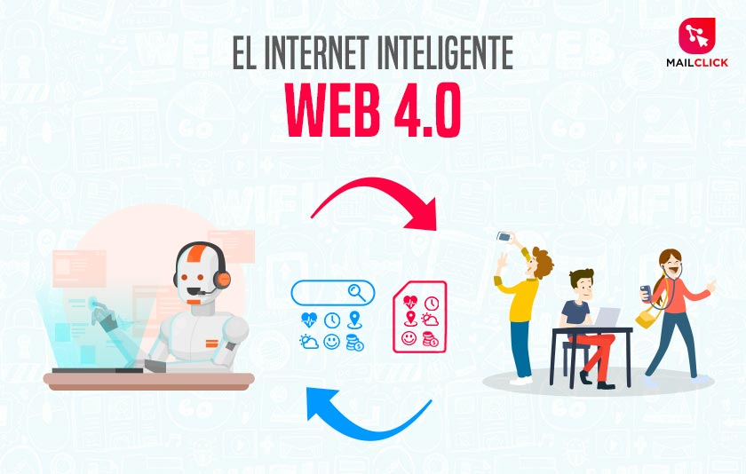

<!DOCTYPE html>
<html>
<head>
    <meta charset='utf-8'>
    <meta http-equiv='X-UA-Compatible' content='IE=edge'>
    <title>Page Title</title>
    <meta name='viewport' content='width=device-width, initial-scale=1'>
    <link rel='stylesheet' type='text/css' media='screen' href='../css/formatotablas.css'>
    <script src='main.js'></script>
    <title>Linea del tiempo</title>
</head>

<body>
    </html>
    <table border="3" width= 100% id="customers">
        <caption>Linea del tiempo</caption>
        <tr>
        <th colspan="5">Evoluci&oacute;n</th>
        </tr>
        <tr>
        <th width=10% >Hitos</th>
        <th width=40%>Hechos</th>
        <th colspan="2" width=40%>imagenes </th>
        <th width=20%>Referencias</th>
        </tr>
        <tr>
        <td><strong>Web 1.0</strong> </td>
        <td>
          
            <p>La Web 1.0 es la forma más básica que existe, con navegadores de sólo texto bastante rápidos ya que es de sólo lectura. El usuario no puedeinteractuar con el contenido de la página (nada de comentarios, respuestas, citas, etc), estando totalmente limitado a lo que el Webmaster sube a ésta.</p>
        </td>
        <td width=20%></td>
        <td width=20%></td>
        <td ><a href="https://www.timetoast.com/timelines/2372191"target="_blank">https://www.timetoast.com/timelines/2372191</a></td>
        </tr>
        <tr>
        <td><strong>Web 2.0</strong></td>
        <td>
            
            <p>
                La Web 2.0 comprende aquellos sitios web que facilitan el compartir información, la interoperabilidad, el diseño centrado en el usuario y la colaboración en la World Wide Web. Un sitio Web 2.0 permite a los usuarios interactuar y colaborar entre sí como creadores de contenido generado por usuarios en una comunidad virtual, adiferencia de sitios web estáticos donde los usuarios se limitan a la observación pasiva de los contenidos que se han creado para ellos.
            </p>
        </td>
        <td></td>
        <td></td>        
        <td ><a href="https://www.timetoast.com/timelines/2372191"target="_blank">https://www.timetoast.com/timelines/2372191</a></td>

        </tr>
        <tr>
            <td><strong>Web 3.0</strong></td>
            <td>
                <p>La web 3.0 es conocida como la “web semántica” porque utiliza de forma más eficiente de los datos: “data web”. Es interoperativa y el usuario tiene el control para hacer los cambios que desee modificando directamente las bases de datos.</p>
    
            </td>
            <td></td>
            <td></td>
            <td ><a href="https://www.timetoast.com/timelines/2372191"target="_blank">https://www.timetoast.com/timelines/2372191</a></td>

            </tr>
            <tr>
                <td><strong>Web 4.0</strong></td>
                <td>
                    <p>Gracias a la web 4.0 permite la computación cognitiva. A través de potentes ordenadores se almacenan en la nube y procesan los datos, peticiones, etc. También conlleva la conexión entre maquinamaquina lo que nos da como resultado una idea a la inteligencia artificial ya que ahora las maquinas saben comunicar lo que su una persona desea a otra y que se entiendan y que puedan comunicarse con nuestro lenguaje. </p>
                </td>
                <td></td>
            <td></td>
                <td ><a href="https://www.timetoast.com/timelines/2372191"target="_blank">https://www.timetoast.com/timelines/2372191</a></td>                
                </tr>
        </table>  
        <a class="ama" href="../index.html"> 

</body>
</html>